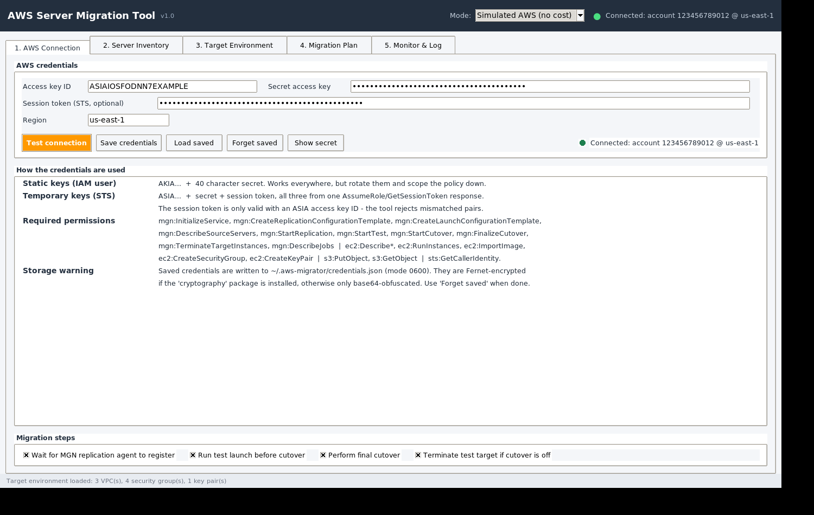
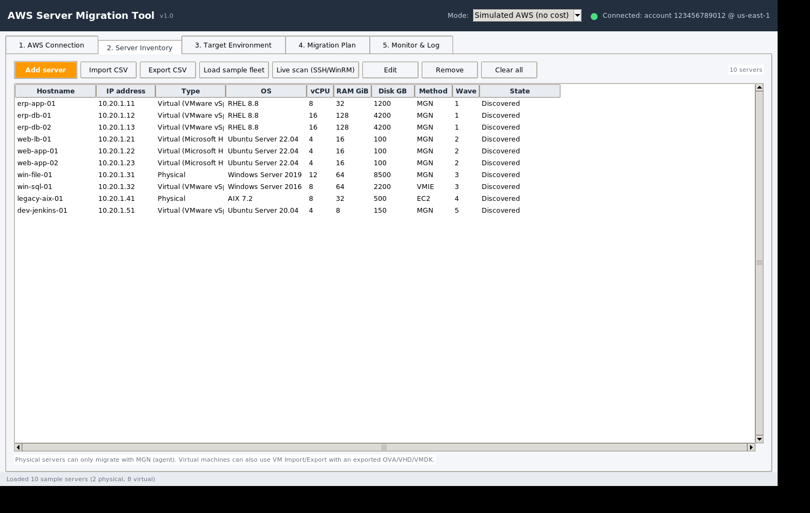
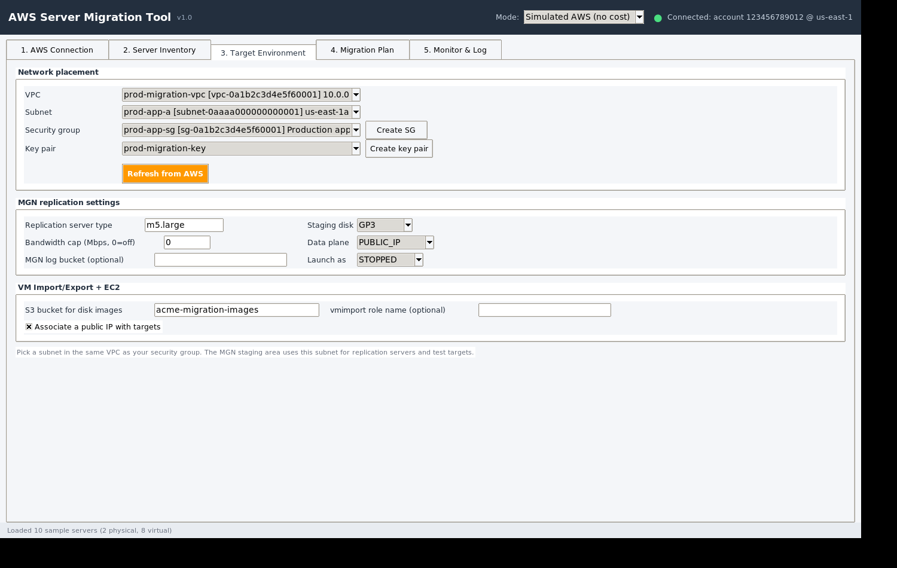
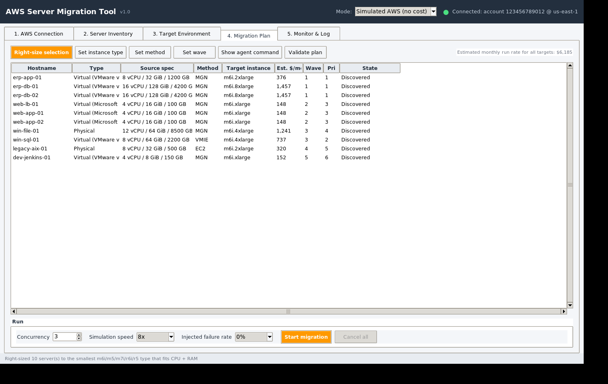
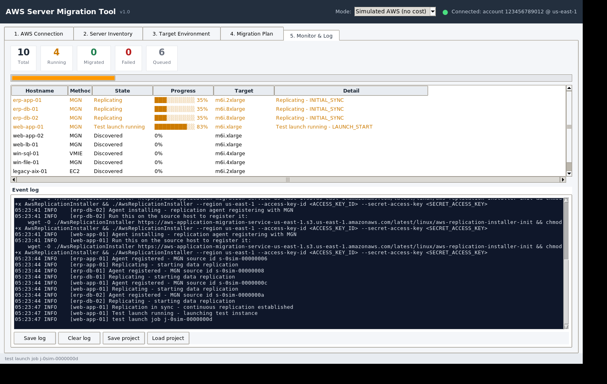
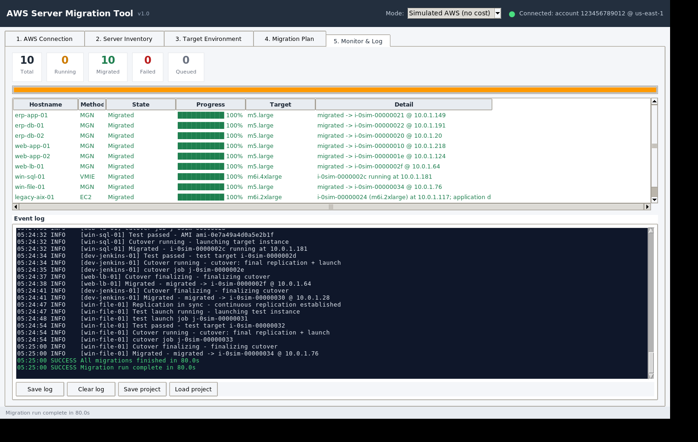

A desktop GUI that migrates on-premises physical and virtual servers to AWS — via AWS Application Migration Service (MGN), EC2 VM Import/Export, or rebuild-as-new EC2 — with live discovery, right-sizing, and a real-time migration monitor. One file. Double-click. No Python, no installs.
Designed for consultants and admins moving fleets of on-premises servers into AWS — without scripting, without agents to deploy by hand, and with a safe simulated mode for rehearsal.
Per-server choice of AWS MGN (agent-based, block-level replication), EC2 VM Import/Export (export → S3 → AMI), or rebuild-as-new EC2 for non-x86 / unsupported hosts.
Rehearse entire migrations end-to-end in the built-in simulator (zero cost, zero risk), then switch to your real account with access key, secret key and session token.
Add servers manually or import CSV, or scan your network over SSH / WinRM to auto-detect OS, CPU, RAM, disks and build the fleet automatically.
Maps each source to a target EC2 instance type, estimates the monthly bill per server, and shows the plan before anything touches AWS.
Watch replication progress, launches and cutovers live; logs every API call so you can audit exactly what the tool did.
Credentials are only stored locally (AES-encrypted when available) and are used solely to call AWS APIs. Nothing is ever sent anywhere else.






Save the single file and double-click it — the GUI opens directly. Nothing to install; Python and all dependencies are bundled inside the executable.
The tool starts in “Simulated AWS (no cost)”. Load the sample fleet, review the right-sizing plan, and run 10 end-to-end demo migrations to learn every screen safely.
Switch to “Live AWS (real account)” and enter your access key ID, secret access key and session token (temporary STS credentials). Test connection validates them instantly.
Add servers by hand, import a CSV, or scan live hosts over SSH/WinRM. Choose MGN, VM Import/Export, or rebuild-as-new for each machine.
Validate the plan, start migrations, and watch replication, launches and cutovers in the live monitor with a full API-call log.